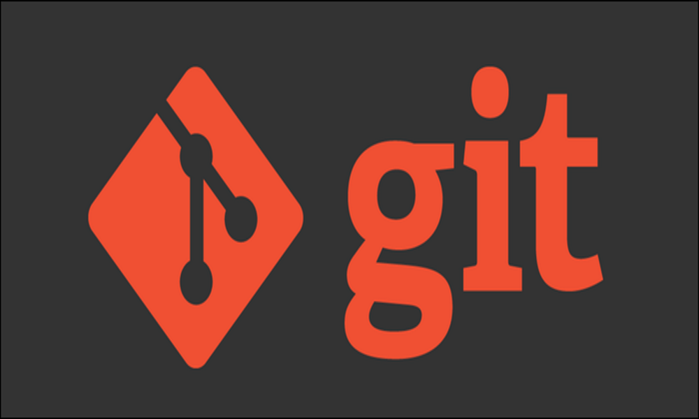
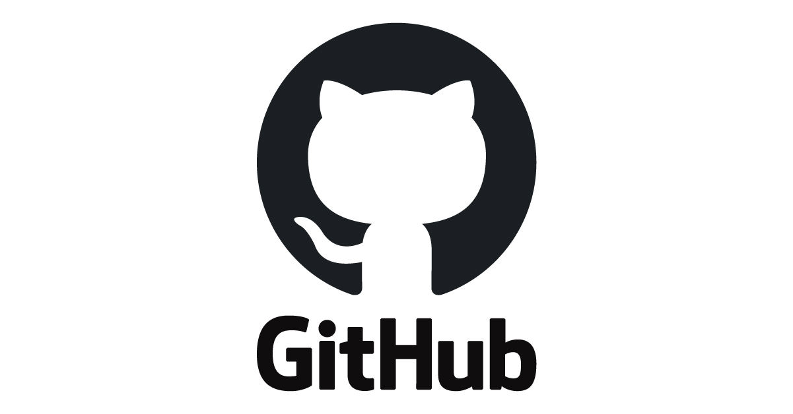

¿Qué es Git?
Git es un sistema de control de versiones distribuido, gratuito y de código abierto. Fue diseñado para manejar desde pequeños a muy grandes proyectos con rapidez y eficiencia.

¿Qué es GitHub?
GitHub es una plataforma en línea que aloja repositorios Git y facilita la colaboración entre desarrolladores. Ofrece herramientas como issues, pull requests y GitHub Actions.
